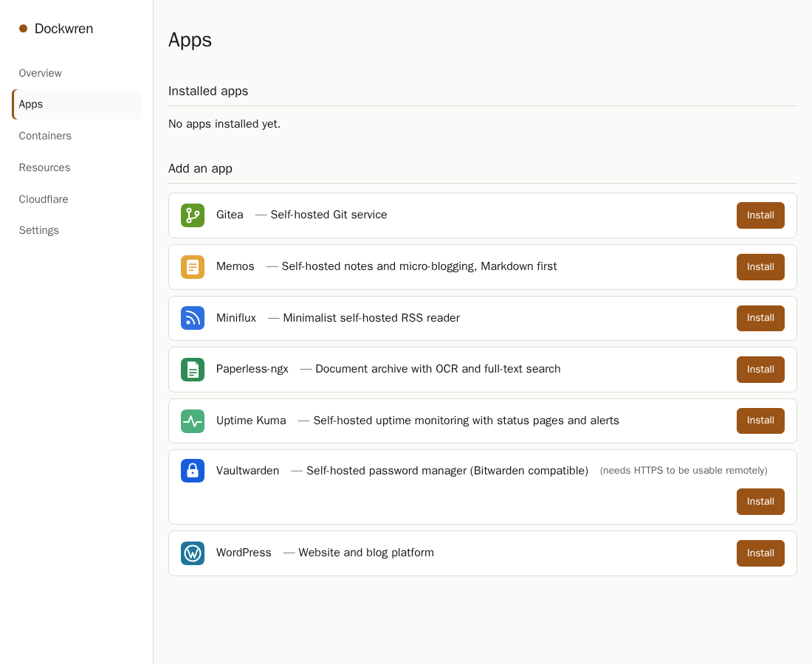
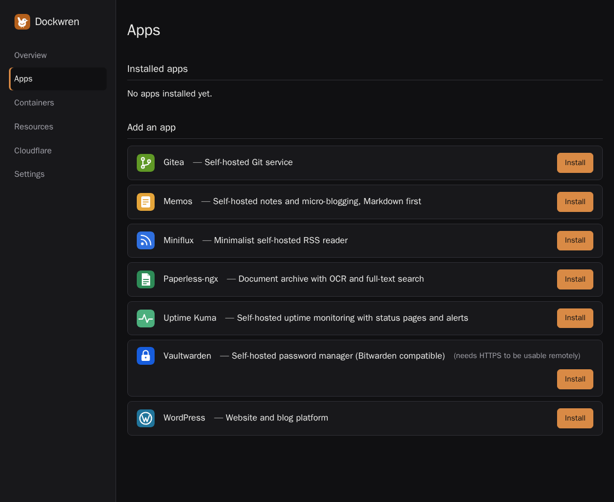

A small Docker panel
for your own server.
Install apps from templates, update them with automatic rollback, back up and restore their data, and publish them on a Cloudflare Tunnel. One static binary. No database. No agents.
curl -fsSL https://raw.githubusercontent.com/ovexro/dockwren/main/install.sh | sudo bashDebian or Ubuntu, x86_64 or aarch64. Installs Docker if missing. Read the script before piping it to a shell.


Everything for a self-hosted box, nothing else
It does a few things and does them carefully.
App catalog
Install from Compose templates with generated passwords and short hints on every field. Add your own with a manifest and a Compose file.
Updates that roll back
If the new version is not healthy, the old one comes back on its own. Templates can run migration steps.
Backups and restore
Files plus database dumps, from the UI or the CLI, on a daily or weekly schedule. Copies can go off-host to SFTP or S3-compatible storage, encrypted. A safety snapshot is taken before every restore.
Resource graphs
CPU, memory, network and disk, per host and per container, up to 30 days. Plain one-colour lines. A full disk gets flagged.
Publish with Cloudflare
Put an app on a Tunnel hostname in one step, with DNS conflict handling and optional Cloudflare Access.
Careful by default
Argon2id login, strict session cookies, rate limiting. Listens on localhost only; reach it over an SSH tunnel.
Bundled apps
Each one is installed, backed up, restored and updated for real before it ships.